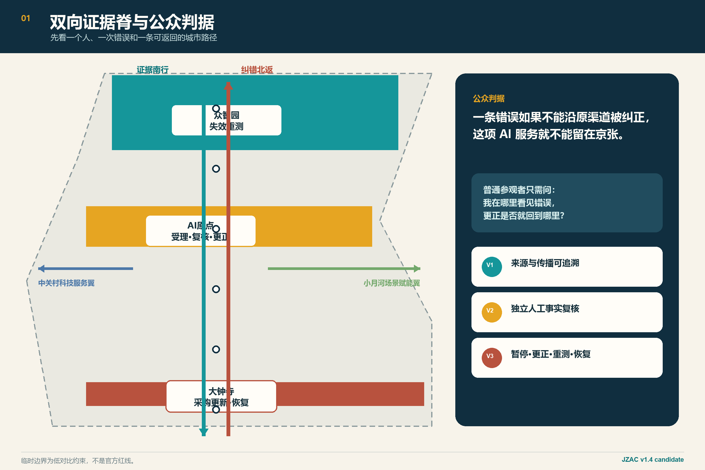
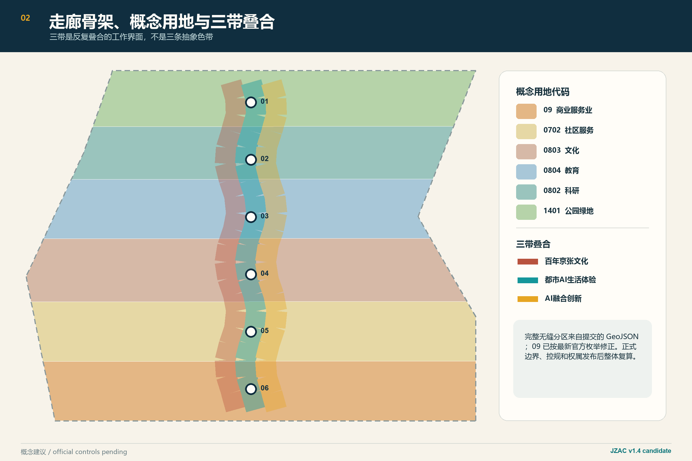
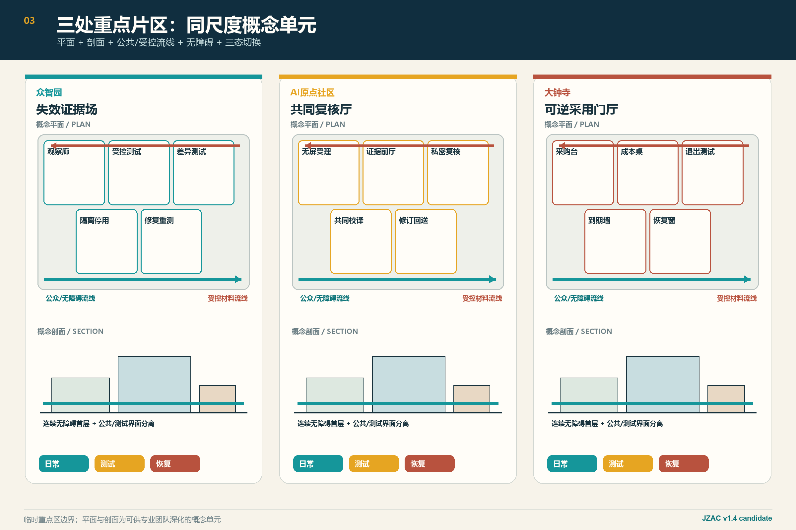
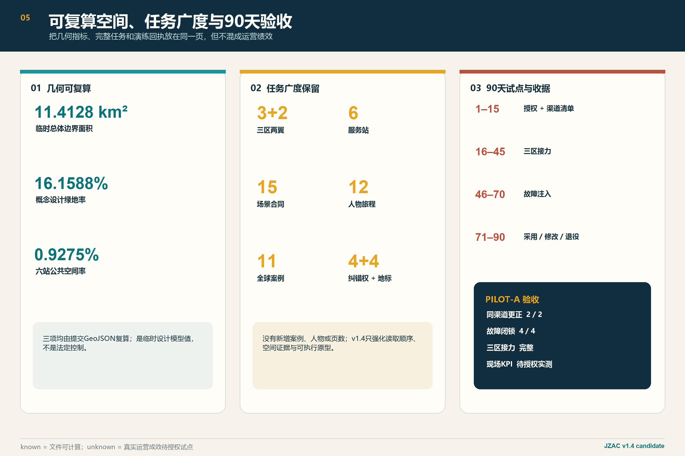

公众判据
一条错误如果不能沿原渠道被纠正，
这项 AI 服务就不能留在京张。
这项 AI 服务就不能留在京张。
一个普通参观者
我在哪里看见错误，
更正是否就回到哪里？
无需先理解模型参数；只检查能否暂停、复核、原路更正并减少后续影响。
我在哪里看见错误，
更正是否就回到哪里？
无需先理解模型参数；只检查能否暂停、复核、原路更正并减少后续影响。
来源能追到、事实有人核、错误真正改掉。任一层缺失，服务保持暂停或退役。
来源 · 版本 · 用途 · 到期 · 全部渠道
来源有效 ≠ 事实真实领域证据 · 复核角色 · 异议 · 不确定
检测器输出 ≠ 人的事实判断暂停 · 同渠道更正 · 重测 · 采购更新 · 恢复/退役
只改后台 ≠ 完成纠错空间结构重新成为主角：真实提交几何做低对比底图，概念干预做高对比叠加。





明确标注的合成测试材料，不是真实事故，也不声称现场绩效。点击任一故障注入，系统必须转为暂停或退役。
不再新增案例、人物、场景或页数；完整内容留在正文、JSON、图纸后页和审查索引。
以下法定栏目在本页均有可见入口；完整证据位于对应图件、正文和结构化文件。
不设真相总分，不建自动黑名单，不声称政府认证，不拥有删帖权。临时边界不是官方红线；容积率、高度、密度、法定绿地率与真实运营KPI待正式资料或授权试点。离线运行，无CDN、远程地图、表单、跟踪器或网络请求。